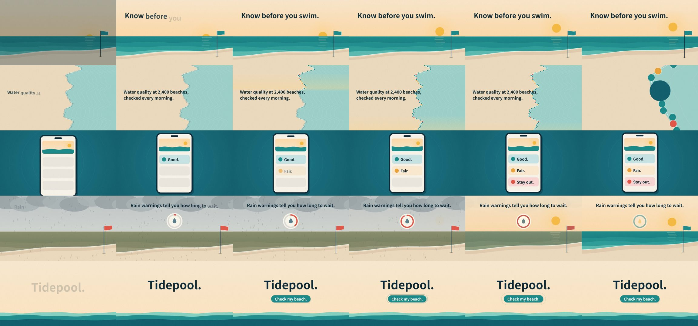

iart-ai/motion-skills: test run, 2026-10-11
The same brief for every skill: a 15-second promo for a made-up app, five fixed lines of on-screen copy, 1920 x 1080 at 30 frames per second. Claude Code (Claude Opus 5.5) made it with the skill in a throwaway sandbox with no API keys for video, image or voice models. 6.5 minutes; sound: yes. All results · The brief · How it is checked
A drawn beach scene whose weather changes with the copy; music made in code.
The four checks
| Renders to a playable file | pass | H.264 |
|---|---|---|
| Length, size and frame rate as asked | pass | 15.0 s, 1920x1080, 30.0 fps |
| All five lines readable | pass | 5 of 5 |
| The picture moves | pass | 10% of sampled frame pairs held still |
Frames sampled twice a second

How it was made (the session's closing message)
I made the Tidepool promo with the installed `javascript-animation` skill, plus its `soundtrack` skill for the music. Every frame is drawn in code on a canvas in one HTML page, and the music is generated in code too. No paid models or API keys were needed. **The file:** H.264, 1920×1080, 30 fps, exactly 15.00 s, with a stereo AAC soundtrack. The repo's probe script reports "spec OK". **What's on screen:** five 3-second shots, one line of copy each, in the brief's order and wording, with no other text: 1. **"Know before you swim."** A beach at dawn: the sun rises and a teal flag flies. 2. **"Water quality at 2,400 beaches, checked every morning."** A coastline seen from above. A band of morning light sweeps down it and the beach dots switch on. The camera then pushes into one dot. 3. **"Good. Fair. Stay out."** A phone shows three rows that land one at a time, in teal, amber and coral. 4. **"Rain warnings tell you how long to wait."** The same beach in rain, with murky water and a red flag. A ring fills up, the rain stops, the water clears and the flag turns teal again. 5. **"Tidepool. Check my beach."** The name, then a button. The music is a calm piece at 80 BPM: plucked notes over a soft pad, with a shaker and a light kick, and rain sounds in shot 4. **Checks I ran:** - The skill's asset check passes: the page loads and embeds nothing. - Its text-overlap check passes. - The audio check passes: every cut lands on a beat with no sudden jump in volume. The first render failed this at the 9 s cut, so I added a soft note on that beat. - I looked at a contact sheet of frames at 2 per second. That led to two fixes: the teal flag was invisible against the sea, and the map line didn't fade before the push-in. **Readability:** the map line in shot 2 is the shortest read. It's fully visible for about 1.2 s and on screen for about 2 s in total. **Workaround:** Playwright, which the skill's scripts use to run the browser, looked for its own Chromium download. Instead of downloading one, I linked its expected path under `~/.cache/ms-playwright/` to the system Chromium. **Project:** `~/work/project/tidepool.html` is the page; opening it in a browser plays the piece, and clicking starts the sound. The folder also has the render scripts' outputs: `tidepool.mp4`, the soundtrack `tidepool.wav`, the cut times in `tidepool.cues.json`, and the contact sheet `sheet.jpg`. DELIVERABLE: ~/work/output/video.mp4